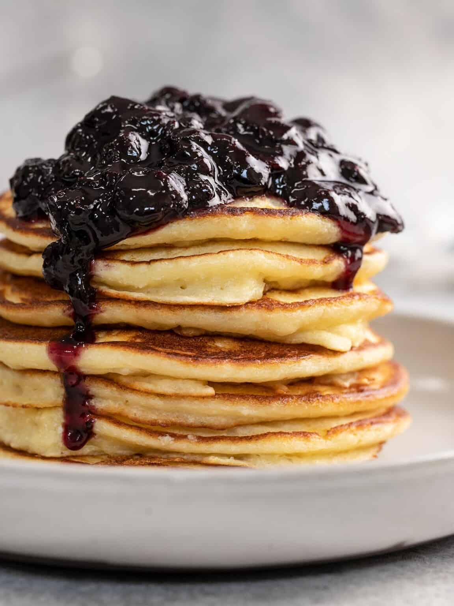

Ricotta Pancakes

Description
If you haven’t added ricotta to your pancake game-you’re truly missing out. I know, I know. Cheese in a pancake sounds awful. But stay with me. Ricotta transforms pancakes into airy, creamy, custardy delights. Once you taste these luscious ricotta pancakes, you’ll be making them non-stop.
Ingredients
- 2 Large Eggs
- 1 Cup Flour
- 1 Tsp Baking Powder
- 1 Tbsp Granulated Sugar
- 1/8 Tsp salt
- 1 Cup Ricotta
- 1 Cup Milk
- 1/2 Tsp Vanilla Extract
- 2 Tbsp Oil, For cooking
Instructions
- Separate the eggs into yolks and whites. Set the whites aside. Beat the egg yolks until they run in a smooth stream through the tines of a fork.
- Add the flour, baking powder, sugar, and salt to a small bowl. Whisk it together to incorporate it fully.
- Add the strained ricotta, milk, beaten egg yolks, and vanilla to a large bowl. Mix to combine.
- Add the dry ingredients on top of the ricotta mixture and gently fold it in.
- Beat the egg whites until stiff peaks form. Add a few tablespoons of the fluffy egg whites to the batter and stir them in to lighten it.
- Add the remaining egg whites to the top of the batter and fold them in with a spatula. Lumps are OK; if you over-mix, you will remove all the air from the batter.
- Place a medium-sized pan over medium heat. Add a 1/2 tablespoon of oil to the pan. Use a 1/3 cup ladle or measuring cup to add batter to the pan.
- Cook the pancake until you see a few bubbles popping through the batter, about 3 minutes. Flip the pancake and cook another 2 minutes until golden. Repeat with the remaining batter. Add 1/2 tablespoon of oil as needed. Makes about 8 pancakes.